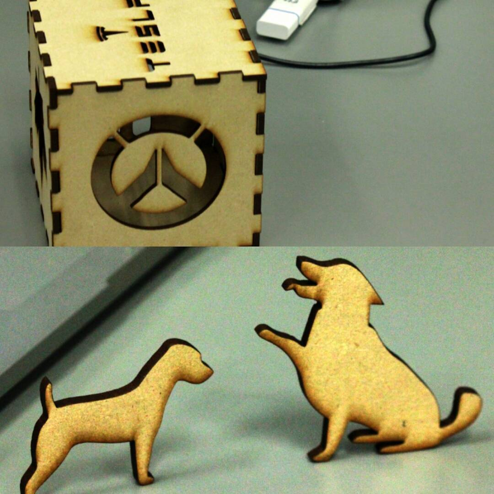

I have been fishing almost every day this summer and have been camping up by the mogollon rim with my friend Mitchell. I also played lots of xbox with my friends.
 DCSI
DCSI
I learned about using unity I also learned easy basic HTML and how to make interactive systems like makeing a sound player using keys to start and stop a sound track as well as pause and resume where you left off in the sound track.
On the second day of the summer institute I learned how to add collision mapping to a game in unity. We also worked on changing the color of things on our website using CSS text documents. And i learned how to use a makey makey to operate a an interactive system and start a video.
 Other